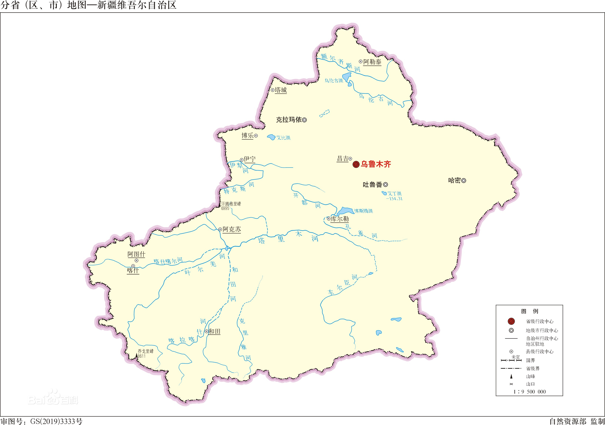
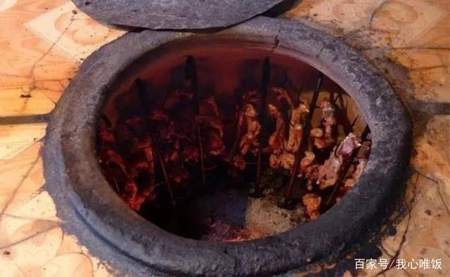
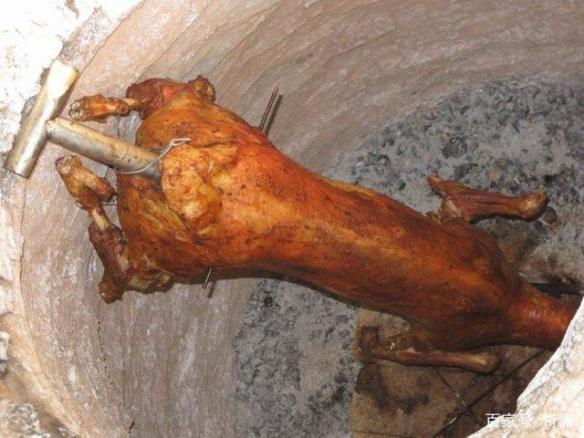
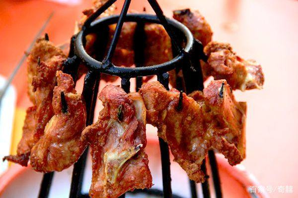
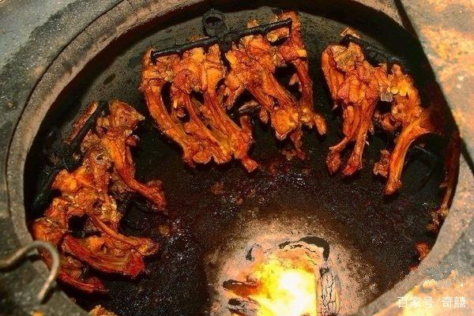
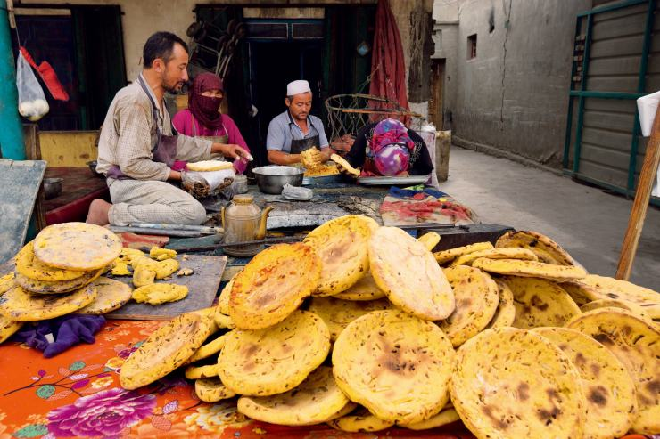
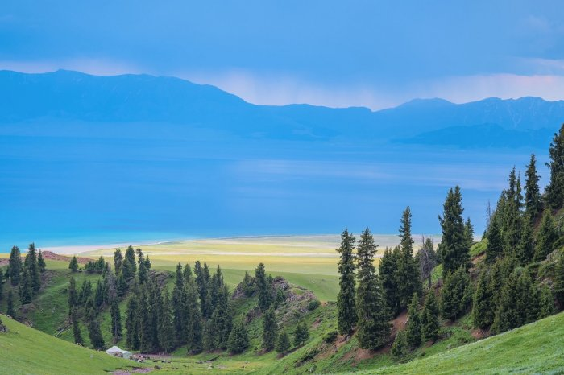
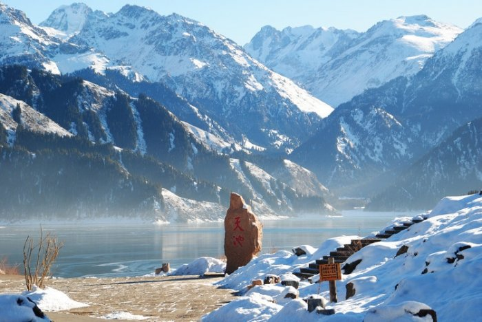
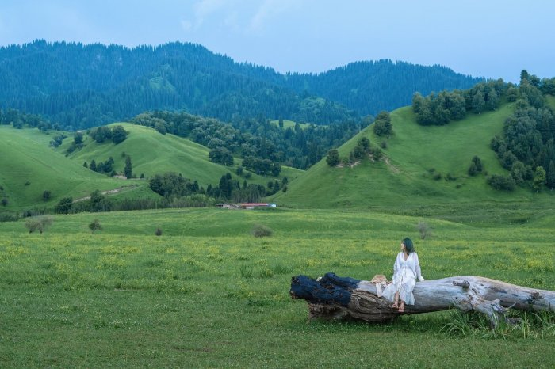

新疆维吾尔自治区，简称“新”，首府乌鲁木齐市，位于中国西北地区，是中国五个少数民族自治区之一。面积166.49万平方公里，是中国陆地面积最大的省级行政区，占中国国土总面积六分之一。2020年第七次全国人口普查常住人口为2585.23万人
| 美食 1.馕坑肉 2.烤全羊 3.架子肉 4.烤羊排 5.新疆馕 |
| 美景 1.喀纳斯河 2.赛里木 3.天池4.那拉提草原 5.伊犁花海 |
馕坑肉这种羊肉不同于我们通常吃的烤羊肉，他更是在烤炉里边剩下的碳灰来烤制的，完完全全与烤羊肉串不一样，是别具有一番的风味。馕坑肉上边的没一块肉都比我们普通见到的烤羊肉串上边的肉大，这我们来到新疆不能够错过的美食，因为里边的肉食一开始不与明火接触，是完全是在大炉子里边焖熟的，所以这里边的羊肉有更多的水分口感会更加的鲜嫩，这样我们吃起来是外边酥嫩可口，非常的美味，这是一个健康绿色的食品。
烤全羊是肉食中最具新疆特色的的美食了，烤全羊外表金黄油亮，肉色黄发脆，里肉鲜嫩，羊肉香味浓郁扑鼻，也是非常好的养生肉食。羊肉的功效：温补脾胃、肝肾、补血温经、保护胃黏膜、补肝明目、是增强体质少不了的肉质食物
架子肉，是把羊肉拌好各种调料，提前腌制几个小时，然后串在烤架上，挂在烤炉里，高温烤熟，烤炉里的温度可达500多度烤好的架子肉会配上生菜。
烤羊排和架子肉的做法相同，也是把羊排拌好各种调料，提前腌制几个小时，然后串在烤架上，挂在烤炉里，高温烤熟。烤羊排配上皮芽子吃起来是有讲究的，肉食吃多了增加血脂，皮芽子是降血脂的，所以两个要搭配食用。所有的羊肉吃法都配有皮芽子，这是新疆人的生活习惯。
新疆馕是维吾尔族人最早的饮食财富，在新疆的历史源远流长。十几年前，在新疆的哈密、且末出土了3000年前的馕，这说明很早以前，馕就是新疆人的传统食物。在漫长的时代变迁中，它没有消失，至今也是喂养我们的一个亲切的存在。只要是馕，在任何地方看到它，都让我们觉得温暖。我们是爱馕的民族。
沿喀纳斯河一路漫步，欣赏西伯利亚落叶松原始森林、白桦林风景，神仙塆，卧龙湾，月亮湾，鸭泽湖，游览喀纳斯湖。
拍摄神往已久的赛里木，碧水蓝天，野花盛开，牛羊在草原上悠闲的吃草，赛里木湖以高山湖泊优美自然景观和白天鹅自然保护区成为摄影家的天堂。
天池古称“瑶池”，是天山博格达峰北侧的一个半月形湖泊，新疆著名的旅游胜地。湖水晶莹如玉，倒映着博格达峰，四周群山环抱，山上布满了挺拔、苍翠的云杉、塔松，犹如仙境。推荐下午晚些时候去，因为随着光线的变化，湖水会呈现近处碧绿远处蓝色的样子。
米拉重点给我们解释了那拉提草原的由来重点给我们解释了那拉提的由来重点给我们解释了那拉提的由来：太阳刚刚探出头来，就用第一缕阳光亲吻了这片草原，于是，牧民的先祖们便给这片土地起了一个诗意般的名字——那拉提，意为：最先见到太阳的地方。4-6月是那拉提草原最佳的赏花季。

伊利花海有着“塞外江南 ”、“ 中亚湿岛”等诸多美誉的土地，拥有庞大的薰衣草种植规模，河谷地区散落有诸多草原。